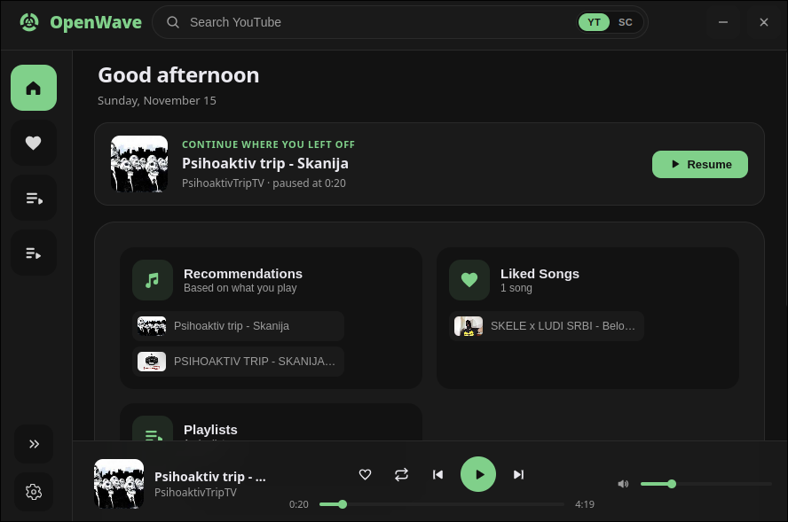
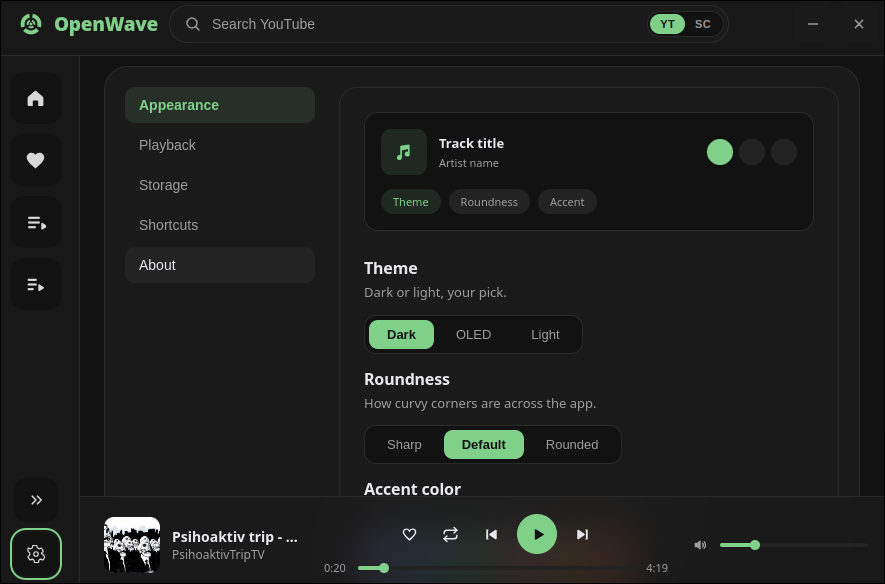

A free, open-source music player for your desktop.
Search anything on YouTube or SoundCloud and just press play.
Frosted glass, a live spectrum visualizer, themes and accent colors — flat and calm, no gradient circus.


Everything a music player should do, nothing it shouldn't.
One search box, two sources. A small toggle switches where your music comes from.
Big artwork, a live spectrum drawn in your accent color, and your queue beside it.
Drag songs from search straight into playlists, reorder anything, it all persists.
Close the app mid-song, open it tomorrow — it picks up at the same second.
Space, N, P, arrows, E, ? — every action has a key. Shortcuts overlay included.
Dark, OLED and light themes, three roundness presets, any accent color you like.
yt-dlp ships inside the app. Download one file, press play. That's the whole install.
Playlists, likes and history never leave your computer. No accounts, no telemetry.
OpenWave is an Electron app that uses yt-dlp to search YouTube and SoundCloud and extract audio streams, piped through a local proxy so seeking works instantly. It's free software under the MIT license — the code is all on GitHub.
Honest note: streaming from YouTube violates YouTube's Terms of Service. Personal use is a well-established gray area — the same one every other FOSS media player lives in. Don't sell it, don't put it in app stores.